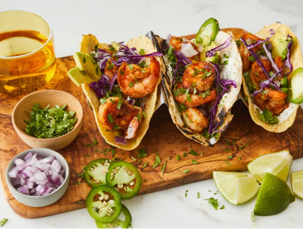

Shrimp Tacos With Cilantro Lime Crema

Description
Sensational shrimp tacos with spicy seasoned shrimp, zesty lime crema, avocado, and cilantro. Super easy to make and never fails to be a crowd
Recipe yields 20 shrimp tacos. Approximatey 1hr 15 mins total time (45 min prep, 30 min cook)
Ingredients
- 2 pounds of shrimp
- 1 1/2 teaspoons chili powder
- 1 teaspoon minced garlic
- 1/2 teaspoon paprika
- 1/2 teaspoon ground cumin
- 1/2 teaspoon onion powder
- 1/2 teaspoon salt
- 1/2 teaspoon ground black pepper
- 1/4 teaspoon ground coriander
- 1/4 teaspoon orange zest
- 2 tablespoons olive oil
- 2 tablespoons sour cream
- 1 lime, zested and juiced
- 1 teaspoon chopped cilantro
- 1/4 teaspoon garlic powder
- pinch of salt and pepper
- 20 (6 inch) corn tortillas
- 2 avocados
- 1 red onion
- 1/2 bunch cilantro
- 1 jalapeno pepper
Directions
- Rinse shrimp under sold water, drain and pat dry.
- Combine and mix chili powder, garlic, paprika, cumin, onion powder, salt, black pepper, coriander, and orange zest in bowl.
- Heat olive in pan over medium-high heat. Add shrimp, cooking for 4-5 minutes on each side.
- While shrimp cooks, whisk together cour cream, zest and juice of 1 lime, 1 teaspoon of cilantro, garlic powder, and pinch of each salt and pepper.
- Heat corn tortillas on pan over low heat, 1-2 minutes per side.
- Assemble tacos. Spread 1 teaspoon of crema across each tortilla, adding 3-4 shrimp, 2 slices of avocado, and a sprinkle of red onion, cilantro, and jalapeno.